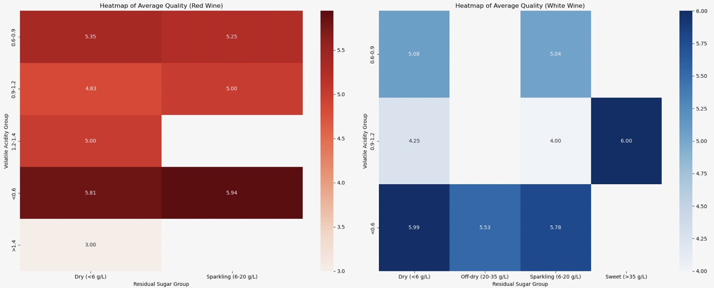

Feature Analysis
The visualization presented here allows users to analyze different features of high-scoring red and white wines using a stacked bar chart. The main takeaway is that it shows the relationship between specific features (e.g. acidity, alcohol content) and wine quality levels across red and white wines. Users can observe how the distribution of 'Low, Medium, High' levels of each feature impacts the quality of the wine, providing insights into the differences between red and white wine profiles. (PS: The 'Low, Medium, High' levels are split based on the 0-33%, 33-66%, and 66-100% ranges.) For example, users can identify which features are more important in higher-quality red wines compared to white wines. The visualization includes three key interactions to enhance user experience: a dropdown selection for comparing different features, a range slider to filter the data by wine quality levels, and a button toggle to show or hide the quality filter. These interactions make it easy for users to explore the data in multiple ways, helping them uncover patterns and differences in how specific attributes affect the quality of red and white wines.
Sustainability Analysis
Question for this visualization: Which properties should producers prioritize to maintain high quality for red and white wines under high sustainability conditions (low alcohol and sulfate levels)?
When aiming for sustainability by reducing alcohol and sulfates, red and white wines depend on shared and distinct attributes to maintain high quality. For both red and white wines, pH and free sulfur dioxide (SO₂) are critical. pH ensures stability and balance, supporting color and tannins in reds while maintaining freshness in whites. Free SO₂ prevents oxidation and preserves quality, especially when sulfates are minimized. However, the third prioritized attribute differs. Red wines benefit from density, which compensates for reduced alcohol by enhancing body and richness, key to their perceived quality. White wines rely on residual sugar, which balances acidity and adds complexity, making up for reduced alcohol levels. In summary, while pH and free SO₂ are essential for both, producers should focus on density for reds and residual sugar for whites to optimize quality sustainably.
Covariance Analysis
Question for this visualization: Which wine type (red vs. white) shows more variability in quality for similar feature values?
The covariance plot compares variability in wine quality between red and white wines based on three feature ratios. Red wines show greater variability in quality for fixed acidity ratios at medium-to-high levels (0.6–0.8), with fluctuating quality despite similar acidity compositions. In contrast, white wines are more consistent, with high-quality samples clustering at specific ratios. For free sulfur dioxide ratios, white wines display tighter clustering at medium levels (0.4–0.6), corresponding to higher quality, while red wines exhibit significant scattering across low-to-medium ratios, indicating less predictable impacts of SO₂ balance. For alcohol-sulfur dioxide ratios, red wines show higher variability at low ratios (0.1–0.3), with samples spanning multiple quality levels, while white wines are more consistent, with high-quality samples concentrated in the medium-to-high range (0.5–0.7).
These findings suggest that red wines are more sensitive to changes in these feature ratios, requiring stricter control over chemical balances to achieve consistent quality. In contrast, white wines show greater stability, with specific ratio ranges reliably linked to higher quality.
Heatmap Analysis
The heatmaps reveal that the interaction between volatile acidity and residual sugar levels influences wine quality. For red wine, the highest quality is achieved when the volatile acidity is in the range of 0.6–0.9, paired with residual sugar levels below 6 g/L (Dry). High volatile acidity beyond 1.4 appears detrimental to quality, likely due to spoilage. For white wine, the highest quality occurs when the volatile acidity is also in the range of 0.6–0.9, but residual sugar levels exceeding 35 g/L (Sweet) are associated with better quality. These insights suggest that producers aiming for higher-quality red wine should prioritize maintaining volatile acidity within the optimal range while ensuring the wine remains dry. For white wine, balancing volatile acidity with higher residual sugar levels could improve quality. Additionally, volatile acidity exceeding legal thresholds correlates with poor quality in both types of wine, emphasizing the importance of strict control during fermentation.